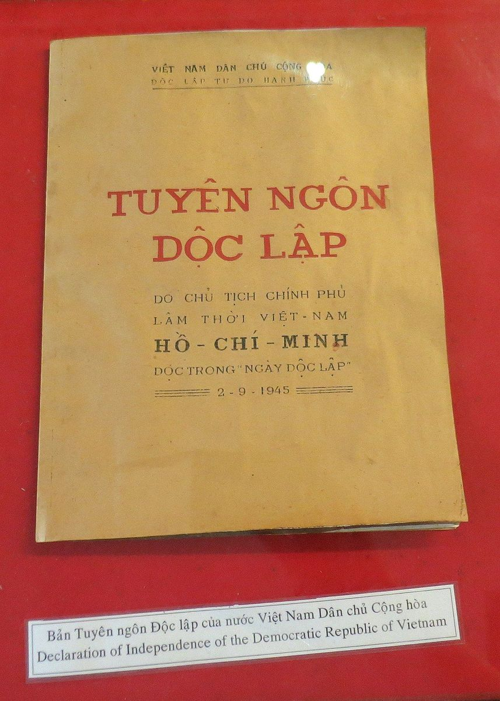
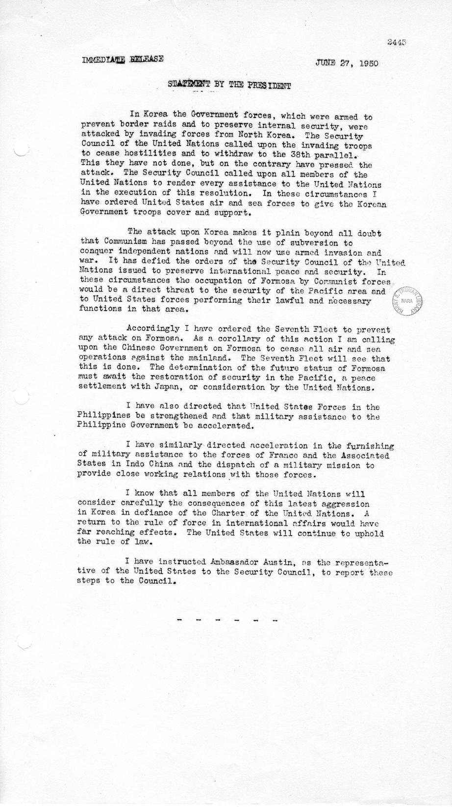
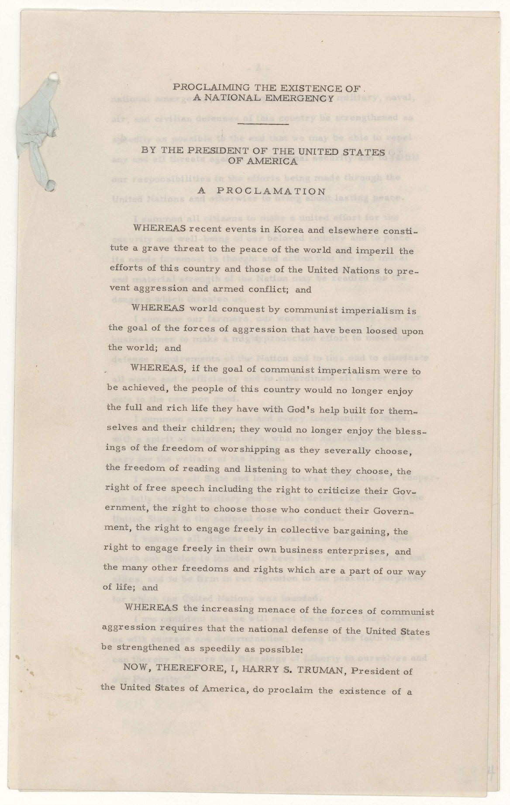

The Cold War Goes Global: Korea and Proxy Wars
In this activity, you will compare primary sources from Ho Chi Minh and Harry Truman in order to understand how different leaders described war, freedom, aggression, and the spread of communism.
Read, Compare, Decide
Read all three documents carefully. As you read, pay attention to how each document explains conflict, freedom, revolution, and danger. Then answer the response box under each source. After that, you will step into the role of an American advisor in 1950 and make a recommendation.
Three Documents, Three Perspectives

Tuyên Ngôn Độc Lập
[Insert upgraded Ho Chi Minh excerpt here]
What message is Ho Chi Minh sending, and why might this language appeal to people in Vietnam?

Statement on Korea
[Insert upgraded Truman Korea excerpt here]
What concerns does Truman express here, and why would this alarm American leaders?

National Emergency Proclamation
[Insert upgraded Truman proclamation excerpt here]
How does Truman describe the danger of communism, and what fears is he trying to communicate?
You Are Advising the President
It is the early 1950s. Korea is at war. Communist governments and movements are gaining strength in Asia. American leaders are trying to decide whether these events are isolated struggles or signs of a much larger global threat.
Based on the documents above, what would most concern American leaders?
- The possibility that communist governments could spread into more countries
- The fear that revolutions in Asia might lead to wider regional instability
- The belief that the United States must act to defend freedom and contain communism
Write a short recommendation to the President. What do you think American leaders in 1950 would argue the United States should do, and why?